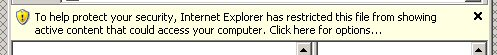
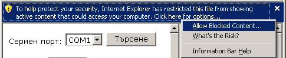
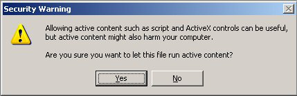

Demonstration software for Fiscal Printer Zeka.
This example must be runned on Windows OS and Internet Explorer Version 4 or higher. The right work with other browsers (Mozilla / Firefox, Opera,..) is not granted! You must enable COM Controls usage in Internet Explorer.
If you are using Windows XP SP2 or newer version of Windows it is possible to see this message:

There you need to click on this bar and select "Allow Blocked Content..." as showed below:

Next you must answer Yes in the following dialog:

In other case Internet Explorer will block the program.
What To Do if the above dialog doesn't appear and the program won't work?
1. Ensure that you have installed the COM Control for Fiscal Printer Zeka. The easyest way is with the instalation pack, which can be downloaded at web address: http://sourceforge.net/projects/zfplib/ or http://www.tremol.bg/download/notuploadedyet.exe
2. Check whether the usage of ActiveX in Internet Explorer is enabled!